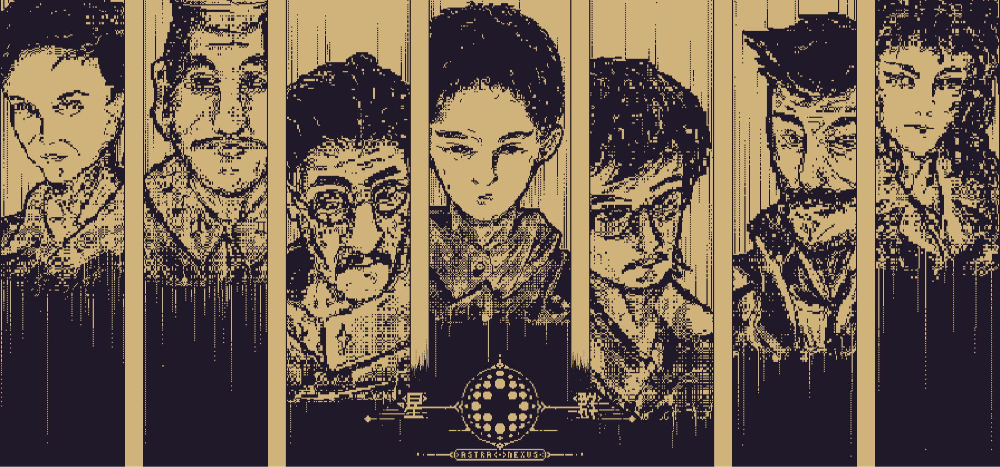

星群 ASTRA NEXUS
一款以空间站档案终端为核心的非线性调查解谜游戏——从一次常规设备维修出发，在跨部门检索与交叉核验中逐步拼出十七年前的事故线索。
《星群 ASTRA NEXUS》诞生于 2026 TapTap 聚光灯 21 天游戏创作挑战（主题「涌现」），由我与队友 THISHI 两人共创并以 Godot 完成提交版。玩家扮演刚抵岗的空间站维修员安德鲁斯基，在例行检修中接手了一台外壳严重烧蚀、铭牌不可读、原始维修参数缺失的旧型号终端 K-3089。为了完成这笔普通工单，玩家需要借助私人终端查询人员与资产档案、跨部门寻求专业协助，并依次完成外壳化学清理、硬件电路修复与旧系统恢复。最终发现空间站尘封已久的往事。
- 开发周期：
- 2026.10.01–10.21 ｜ 2026 TapTap 聚光灯 21 天挑战（两人共创 · Godot）
- 我的职责：
- 世界观与剧情架构、人物与任务设计、全量对白与档案撰写；共同设计核心玩法，负责节点功能、调查路线与线索编排；设计维修小游戏并以 AI 辅助制作网页可玩原型；负责结局演出与动画制作
- 队友分工（THISHI）：
- 界面与美术、整体程序、节点工作区开发，将小游戏重写为 Godot 实现并接入提交版


故事前提与三阶段维修：操作如何产出线索
在《星群》里，维修不是脱离剧情的填料小游戏，而是撬开新检索入口的叙事开关。设备每恢复一层物理状态，才会释放出下一层可供查询的编号、姓名或历史记录，把一次常规工单逐步牵引至十七年前的 2103 太阳风暴事故：
阶段一 · 外壳化学处理（科学部）：接手 K-3089 时，玩家仅能以型号查到停产与资料缺失等系列级信息。前往科学部清除高温烧蚀与涂层残留后，铭牌重新可读，露出完整单机序列号
K-3089-3-117与激光铭文「赠予欧普洛斯·克洛诺斯」。由此，调查才得以从公开设备目录跨入具体的单机资产与定制人图马斯。阶段二 · 硬件线路诊断与修复（硬件系统组）：在旧接口板上使用探针核验各测试点的通断与信号稳定性，定位故障回路并接入备用旁路完成电路修复。修复通电后，设备除解锁软件检修外，还暴露出“初始化次数极少、使用磨损极低”的物理状态——这一细节直接为后续质疑设备当年是否真正交付埋下了可查证的依据。
阶段三 · 旧系统恢复（软件组）：修复损坏的旧格式系统，提取当年预写的工程权限配置与私人留言，使玩家第一次拿到能与十七年前公开事故报告直接对照的一手材料。


节点工作台：把检索路径留在台面上
早期原型曾尝试用普通搜索框推进调查，但信息只要超过三层，玩家就会忘记某条线索出自哪份档案、又指向哪位同事，调查很快沦为机械试词。因此我们转向单画布的节点工作台，把所有查到的人物、设备、文档和检索关系都留在视野内，让玩家始终能回头追溯证据出处。
工作台围绕「发现信息缺口 → 检索与筛选资料 → 寻人或推进维修 → 解锁新对象」运转，工具只提供信息检索与运行能力，线索之间是否矛盾、要不要继续深挖，全部留给玩家判断：
- 发现信息缺口
- 检索与筛选资料
- 寻人或推进维修
- 解锁新对象
- 属性：
- 查看人物、设备或组织的登记信息（所属部门、专长与门牌）。
- 追踪：
- 从已知对象出发，向外查找相关联的档案、公告或人员记录。
- 筛选：
- 连接在追踪得到的信息集合之后，输入关键词收窄核读范围。
- 程序：
- 启动已获取的维修或系统交互程序。
- 连接：
- 前段作为人员通讯测试与趣味工具，完整通讯功能则在结局阶段与前文形成呼应。


多入口寻人与条件状态分支
进入硬件修复阶段后，玩家需要找到硬件系统组组长佩内洛普，但她在档案里登记的办公室当时空无一人。为了不把开放探索写成单线跑腿，我们在这里拆出两条互不依赖的破局路径，最终汇入同一处回收设备检修现场：


由于玩家在开放探索后可以按任意顺序拜访不同部门，甚至完全跳过早期拜访，关键角色的对白必须严格绑定当前的维修阶段、是否初见与认知状态。以软件组组长理查德为例，系统按「外壳未修」「已修外壳但硬件未修」「硬件已修直接进入软件修复」以及首次/再次来访区分回应与分支选项，确保玩家不会在尚未查询资产档案时就“脱口而出定制人是谁”，让非线性调查在逻辑上严丝合缝。


证据核验、事实边界与克制的双结局
修好 K-3089 之后，真正的叙事分叉才开始出现。软件组组长理查德按住设备，把选择权交回给玩家：立刻合上终端回工程部交差，还是打开旧配置继续追查。
一旦选择继续，游戏节奏从“修设备”转为“核对证词”：玩家需要将旧配置中的「固定数列高级密钥」与十七年前公开事故报告里图马斯所述的「动态密钥」交叉比对，携带打印材料与理查德共同质询图马斯，再从欧普洛斯的遗物中转译出关键数字，并通过工程部管理层（大卫直接核验，或佩内洛普先以自身“过度联想”的案例测试提醒玩家警惕把推测当成事实，再共同审阅材料）向部长伊利亚德提交受限档案查阅申请。
即便走到最后，我们仍刻意在叙事上守住证据边界：调查能够证实图马斯当年确实交过密钥并在报告中有所隐瞒，但关于事故当天是否获得授权、以及当事人真实动机的部分，依然明确区分「已证实事实」与「无法证伪的推断」。两条结局共用同一套终端界面与运镜，仅通过公告、人员安排与通讯对象的细微变化呈现余波——不给廉价的全知反转，把判断的重量留给玩家。
| 变化 | 停止调查 | 继续调查 |
|---|---|---|
| 人员安排 | 图马斯再次休眠 | 其他工程师接管中央控制系统 |
| 公告与档案 | 设备归档，终端显示日常公告 | 档案追加调查状态，发布重启调查公告 |
| 聊天对象 | 安妮、佩内洛普，聊样本与植物 | 理查德、大卫，聊辩论赛与工作 |
项目总结
在 21 天的极限周期里，《星群》是一次用系统结构承载叙事克制的实验。通过 AI 辅助网页原型提前跑通小游戏与流程逻辑，我们得以把更多精力投入到档案可读性、状态机防呆和多入口寻人编排上。比起讲一个剧烈反转的科幻悬疑故事，这个项目更想证明：只要把“查找—比对—怀疑—选择”的动作诚实地交还给玩家，哪怕是一份枯燥的维修工单和几页旧档案，也能生长出足够真实的情感张力。